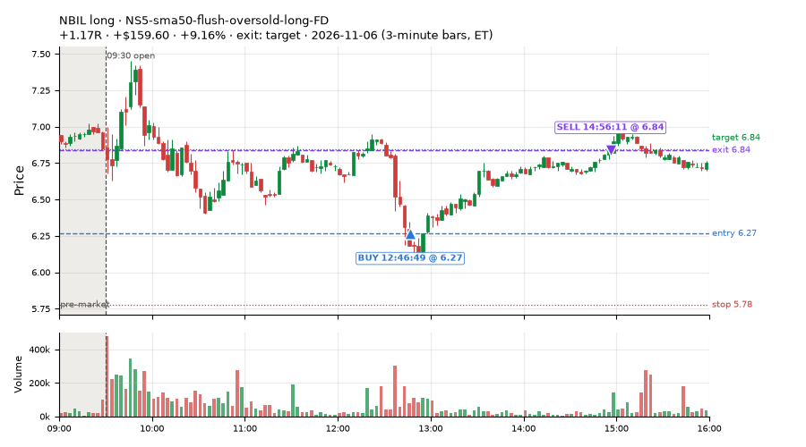
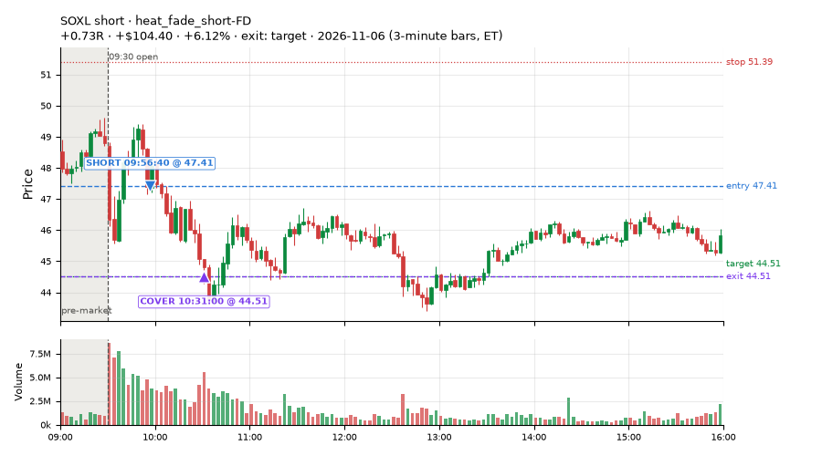
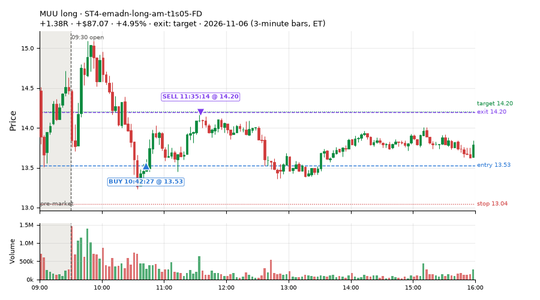
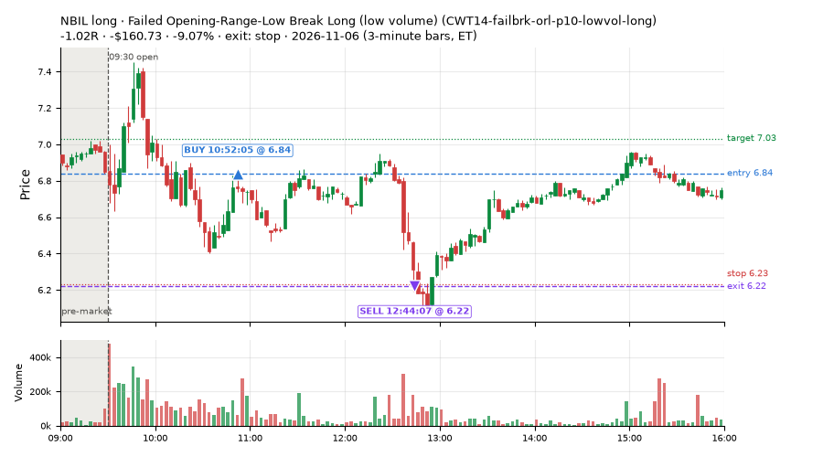
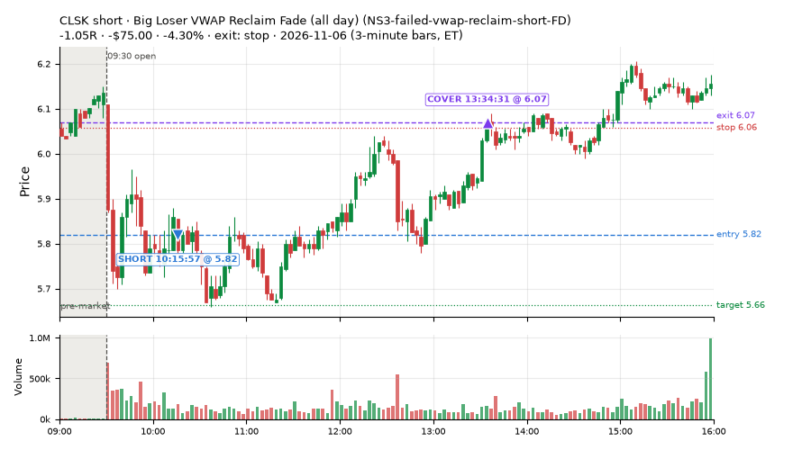
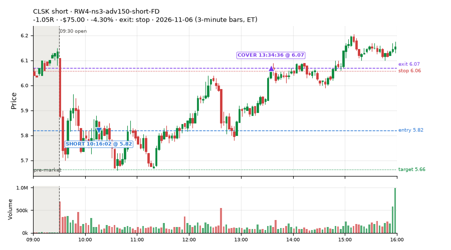
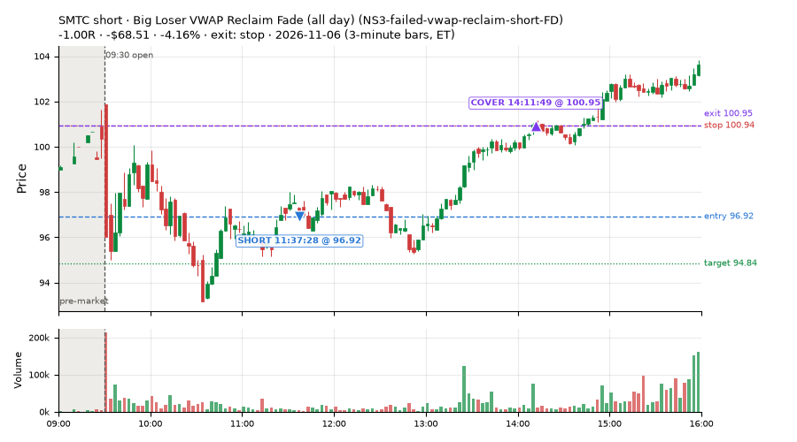
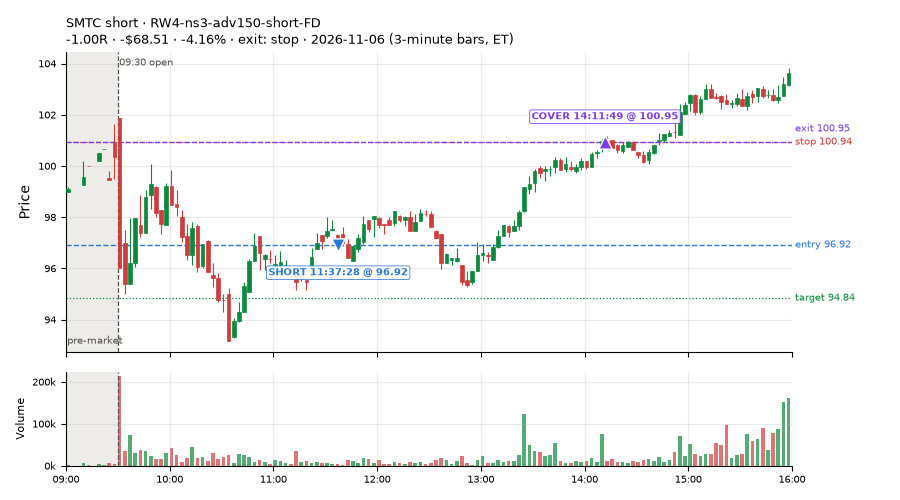

623 trades · win rate 64% · P/L $536.28
PROBATION: no live setup has passed both locked test periods. 10 owner-directed setups added 2026-10-08 (MarcoFlow top 5 + 5 new), untested live. RW6G1 (RW6 + VWAP band guard) added 2026-10-09, probation.

| Symbol | Setup | Side | In | Out | Entry | Exit | Exit reason | % gained | P/L |
|---|---|---|---|---|---|---|---|---|---|
| NBIL | NS5-sma50-flush-oversold-long-FD | long | 12:46 | 14:56 | 6.27 | 6.84 | target | +9.16% | $159.60 |
| SOXL | heat_fade_short-FD | short | 09:56 | 10:31 | 47.41 | 44.51 | target | +6.12% | $104.40 |
| MUU | ST4-emadn-long-am-t1s05-FD | long | 10:42 | 11:35 | 13.53 | 14.20 | target | +4.95% | $87.07 |
| Symbol | Setup | Side | In | Out | Entry | Exit | Exit reason | % lost | P/L |
|---|---|---|---|---|---|---|---|---|---|
| NBIL | CWT14-failbrk-orl-p10-lowvol-long | long | 10:52 | 12:44 | 6.84 | 6.22 | stop | -9.07% | $-160.73 |
| CLSK | NS3-failed-vwap-reclaim-short-FD | short | 10:15 | 13:34 | 5.82 | 6.07 | stop | -4.30% | $-75.00 |
| CLSK | RW4-ns3-adv150-short-FD | short | 10:16 | 13:34 | 5.82 | 6.07 | stop | -4.30% | $-75.00 |
| SMTC | NS3-failed-vwap-reclaim-short-FD | short | 11:37 | 14:11 | 96.92 | 100.95 | stop | -4.16% | $-68.51 |
| SMTC | RW4-ns3-adv150-short-FD | short | 11:37 | 14:11 | 96.92 | 100.95 | stop | -4.16% | $-68.51 |








Signal to fill: median 2s, 90th percentile 5s (623 trades). Bars close each minute; the order follows the bar close.
Best excursion (MFE): median 0.45R; worst (MAE) median 0.48R. 27% of trades never got +0.25R in our favour; 5 reached +1R and still closed at or below 0.
| Symbol | Setup | Best R | Worst R | Closed R |
|---|---|---|---|---|
| GD | MF1-945-flowsell-vwapup-FD | +1.17 | -1.15 | -1.14 |
| ABT | CWT12-coil-k6-long | +1.29 | -1.01 | -1.00 |
| INDA | MF1-945-flowsell-vwapup-FD | +1.13 | -0.99 | -1.13 |
| ORCL | CWT14-failbrk-orl-p10-long | +0.38 | -2.47 | -1.83 |
| CPB | CWT12-coil-k6-long | +1.05 | -1.05 | -1.15 |
| Entry time | Trades | Win | Avg R | P/L |
|---|---|---|---|---|
| 09:50-10:30 | 233 | 73% | +0.17 | $1,275.48 |
| 10:30-11:30 | 209 | 56% | -0.12 | $-1,126.28 |
| 11:30-13:00 | 95 | 58% | +0.05 | $347.62 |
| 13:00-14:00 | 42 | 64% | +0.07 | $-67.26 |
| 14:00-16:00 | 44 | 73% | +0.17 | $106.72 |
| Setup | Trades | Win | Avg R | Adj R (net of SPY) | Avg R ex-market (all sessions) | P/L |
|---|---|---|---|---|---|---|
| Coil Under the High (4 bars) (CWT12-coil-k4-long) | 44.0 | 70% | -0.01 | -0.00 | -0.01 (beta +0.91, n 246) | $-19.12 |
| Coil Under the High (6 bars) (CWT12-coil-k6-long) | 15.0 | 47% | +0.18 | +0.17 | -0.09 (beta +0.20, n 99) | $6.29 |
| Stretched Above VWAP Fade (CWT13-vwapstretch-z05-short) | 11.0 | 73% | +0.46 | +0.02 | +0.05 (beta -0.53, n 105) | $41.68 |
| Failed Opening-Range-Low Break Long (0.05 ATR) [fill] (CWT14-failbrk-orl-p05-long) | 22.0 | 55% | -0.17 | -0.09 | -0.15 (beta +0.98, n 545) | $-93.78 |
| Failed Opening-Range-Low Break Long (0.05 ATR, low volume) [fill] (CWT14-failbrk-orl-p05-lowvol-long) | 21.0 | 52% | -0.32 | -0.23 | -0.12 (beta +0.83, n 459) | $-141.17 |
| Failed Opening-Range-Low Break Long (0.1 ATR) [fill] (CWT14-failbrk-orl-p10-long) | 47.0 | 55% | -0.28 | -0.17 | -0.12 (beta +1.00, n 333) | $-466.30 |
| Failed Opening-Range-Low Break Long (low volume) (CWT14-failbrk-orl-p10-lowvol-long) | 44.0 | 50% | -0.38 | -0.27 | -0.06 (beta +1.00, n 363) | $-655.32 |
| Failed Prior-Day-High Break Short (0.05 ATR, low volume) [fill] (CWT14-failbrk-pdh-p05-lowvol-short) | 6.0 | 100% | +0.53 | +0.65 | -0.13 (beta -1.30, n 206) | $68.00 |
| Failed Prior-Day-High Break Short (low volume) (CWT14-failbrk-pdh-p10-lowvol-short) | 4.0 | 75% | +0.07 | +0.11 | -0.15 (beta -1.14, n 114) | $-0.57 |
| Failed Prior-Day-High Break Short (0.1 ATR) [fill] (CWT14-failbrk-pdh-p10-short) | 5.0 | 60% | -0.13 | -0.16 | -0.17 (beta -1.27, n 221) | $-74.80 |
| Failed Prior-Day-Low Break Long (shallow) (CWT14-failbrk-pdl-p05-long) | 33.0 | 79% | +0.15 | +0.22 | -0.04 (beta +0.87, n 157) | $40.32 |
| Failed Prior-Day-Low Break Long (0.05 ATR, low volume) [fill] (CWT14-failbrk-pdl-p05-lowvol-long) | 78.0 | 62% | -0.09 | -0.08 | -0.07 (beta +1.55, n 160) | $-103.06 |
| Opening-Range Low Sweep Reversal (LIQ-orl-sweep-open15-s25-long) | 11.0 | 45% | -0.16 | +0.07 | -0.12 (beta -0.08, n 153) | $-198.53 |
| MF1-945-flowsell-vwapup-FD | 9.0 | 67% | +0.31 | -0.49 | -0.02 (beta -2.27, n 63) | $24.15 |
| Early Sellers into a Pop (all day) (MF3-open-flowsell-rsi5hi-FD) | 11.0 | 64% | +0.11 | -0.29 | -0.03 (beta -1.43, n 50) | $3.86 |
| MF5-flowsell-vwapup-rsi5hi-FD | 5.0 | 60% | +0.30 | -0.28 | +0.23 (beta -1.40, n 20) | $13.41 |
| Big Gainer Average Reclaim Fade (NS2-sma50break-overbought-short) owner-directed; holdouts once: Sep-Oct -0.115R n76, Apr-Jun +0.021R n587 | 2.0 | 100% | +0.92 | +0.47 | -0.18 (beta -3.10, n 8) | $23.61 |
| NS2-sma50break-overbought-short-FD | 12.0 | 25% | -0.51 | -0.81 | -0.17 (beta -0.76, n 83) | $-102.13 |
| Big Loser VWAP Reclaim Fade (all day) (NS3-failed-vwap-reclaim-short-FD) | 45.0 | 67% | +0.09 | -0.05 | -0.26 (beta -0.58, n 59) | $50.55 |
| NS5-sma50-flush-oversold-long-FD | 10.0 | 80% | +0.23 | +0.23 | +0.17 (beta +1.80, n 15) | $151.44 |
| RW2-exhaustion-noon-adv150-short-FD | 20.0 | 65% | +0.06 | -0.11 | -0.37 (beta -1.14, n 257) | $48.43 |
| RW4-ns3-adv150-short-FD | 28.0 | 64% | +0.14 | -0.01 | -0.16 (beta -0.33, n 54) | $55.69 |
| Big Gainer SMA50 Cross Fade (all day) (RW6-ns2-up3-short-FD) | 3.0 | 33% | -0.46 | -0.85 | -0.18 (beta -2.10, n 33) | $-44.25 |
| RW6G1-ns2-up3-vwap2sd-short-FD | 3.0 | 67% | -0.20 | -0.44 | – | $-32.61 |
| ST1-ordn-long-pm-t05s1-FD | 11.0 | 91% | +0.44 | +0.43 | -0.04 (beta +1.49, n 29) | $222.24 |
| ST2-slope20up-long-am-t05s1-FD | 13.0 | 31% | -0.26 | -0.16 | +0.00 (beta +0.96, n 165) | $-100.13 |
| ST4-emadn-long-am-t1s05-FD | 12.0 | 67% | +0.54 | +0.54 | +0.69 (beta +2.49, n 20) | $205.83 |
| Midday Gap-Up Dip Buy (heat_fade_long) failed Apr-Jun holdout: -0.138R/trade over 1043 trades | 30.0 | 77% | +0.38 | +0.37 | +0.24 (beta +1.88, n 94) | $415.99 |
| heat_fade_long-FD | 7.0 | 29% | -0.42 | -0.32 | -0.21 (beta +1.34, n 90) | $-87.32 |
| Morning Bounce Fade (heat_fade_short) failed Apr-Jun holdout: -0.015R/trade over 1420 trades | 34.0 | 88% | +0.69 | +0.54 | -0.15 (beta -1.11, n 166) | $786.50 |
| heat_fade_short-FD | 27.0 | 81% | +0.46 | +0.23 | -0.21 (beta -1.59, n 299) | $497.37 |
Market direction (SPY, beta 1) accounted for $235.65 of today's $536.28; the rest ($300.63) came from the setups themselves. Avg R net of SPY: -0.00 (incl. a hedge leg's cost; report only).
33 setups live today. Today: 1793 signals, 623 taken, 167 lost because another setup held the symbol (9%). Since 2026-10-21 (13 sessions): 13986 signals, 4838 taken, 736 lost to other setups (5%). Peak open positions today 173 of 200 slots. Earnings blackout removed 1531 symbols before scanning.
Simulated playing time (not live): 9105 what-if trades of signals not taken, avg -0.06R, 55% winners; of them 735 lost to another setup (avg -0.07R).
Crowded out: NS2-sma50break-overbought-short · Starved: MF1-945-flowsell-vwapup-FD, heat_fade_long, heat_fade_long-FD, heat_fade_short-FD
| Prio | Setup | Today sig / taken | Sessions | Signals / taken / trades | Taken/day | Expected/day | Lost to other setups | Lost to (setup n) | Top skip reasons | SIMULATED: not-taken n / avg R / win | Verdict |
|---|---|---|---|---|---|---|---|---|---|---|---|
| 1 | ST1-ordn-long-pm-t05s1-FD ST1-ordn-long-pm-t05s1-FD | 15 / 11 | 13 | 41 / 29 / 29 | 2.23 | 3.49 | 0 | – | spread / quote / size 10, broker rejected 1, other 1 | 12 / -0.35R / 33% | slow 11.2 entries/week; ~5 weeks to 60 trades |
| 2 | Big Gainer SMA50 Cross Fade (all day) RW6-ns2-up3-short-FD | 18 / 3 | 13 | 90 / 33 / 33 | 2.54 | 7.12 | 6 | CWT12-coil-k4-long 3, LIQ-orl-sweep-open15-s25-long 2, CWT09-gapdn-bounce-g5-lowerhalf-short 1 | not shortable / shorts off 33, daily loss cap 12, symbol held by another setup 6 | 57 / +0.47R / 82% | slow 12.7 entries/week; ~5 weeks to 60 trades |
| 3 | NS2-sma50break-overbought-short-FD NS2-sma50break-overbought-short-FD | 52 / 12 | 13 | 190 / 83 / 83 | 6.38 | 17.08 | 10 | CWT12-coil-k4-long 7, CWT12-coil-k6-long 2, LIQ-orl-sweep-open15-s25-long 1 | daily loss cap 39, not shortable / shorts off 31, spread / quote / size 21 | 107 / +0.32R / 72% | ok 31.9 entries/week |
| 4 | Big Gainer Average Reclaim Fade NS2-sma50break-overbought-short | 31 / 2 | 13 | 94 / 8 / 8 | 0.62 | 5.74 | 54 | NS2-sma50break-overbought-short-FD 45, RW6-ns2-up3-short-FD 11, CWT12-coil-k4-long 6 | symbol held by another setup 54, spread / quote / size 15, not shortable / shorts off 11 | 86 / +0.14R / 63% | crowded-out 54 of 94 signals (57%) lost to setups already holding the symbol |
| 5 | MF1-945-flowsell-vwapup-FD MF1-945-flowsell-vwapup-FD | 19 / 9 | 13 | 167 / 63 / 63 | 4.85 | 23.94 | 3 | CWT12-coil-k6-long 1, CWT14-failbrk-orl-p05-long 1, CWT12-coil-k4-long 1 | daily loss cap 45, spread / quote / size 43, not shortable / shorts off 12 | 104 / -0.02R / 40% | starved 4.85 entries/day vs ~23.94 expected |
| 6 | ST2-slope20up-long-am-t05s1-FD ST2-slope20up-long-am-t05s1-FD | 41 / 13 | 13 | 489 / 165 / 165 | 12.69 | 24.03 | 24 | heat_fade_short-FD 10, CWT09-gapdn-bounce-g5-lowerhalf-short 5, NS3-failed-vwap-reclaim-short-FD 3 | daily loss cap 219, spread / quote / size 40, per-setup cap 37 | 321 / -0.06R / 60% | ok 63.5 entries/week |
| 7 | Midday Gap-Up Dip Buy heat_fade_long | 48 / 30 | 13 | 158 / 94 / 94 | 7.23 | 30.36 | 16 | heat_fade_long-FD 8, NS3-failed-vwap-reclaim-short-FD 3, RW4-ns3-adv150-short-FD 3 | spread / quote / size 22, symbol held by another setup 16, daily loss cap 15 | 64 / -0.22R / 44% | starved 7.23 entries/day vs ~30.36 expected |
| 8 | Opening-Range Low Sweep Reversal LIQ-orl-sweep-open15-s25-long | 18 / 11 | 13 | 299 / 153 / 153 | 11.77 | – | 14 | CWT14-failbrk-orl-p10-long 12, CWT14-failbrk-orl-p05-lowvol-long 11, CWT14-failbrk-orl-p10-lowvol-long 10 | per-setup cap 57, daily loss cap 45, spread / quote / size 24 | 146 / -0.06R / 41% | ok 58.8 entries/week |
| 9 | RW2-exhaustion-noon-adv150-short-FD RW2-exhaustion-noon-adv150-short-FD | 40 / 20 | 13 | 591 / 257 / 257 | 19.77 | 50.34 | 14 | CWT12-coil-k4-long 5, CWT12-coil-k6-long 3, NS3-failed-vwap-reclaim-short-FD 3 | daily loss cap 152, not shortable / shorts off 70, spread / quote / size 65 | 334 / -0.09R / 48% | ok 98.8 entries/week |
| 10 | heat_fade_long-FD heat_fade_long-FD | 60 / 7 | 13 | 301 / 90 / 90 | 6.92 | 51.74 | 44 | heat_fade_long 39, heat_fade_short-FD 2, heat_fade_short 2 | daily loss cap 120, spread / quote / size 47, symbol held by another setup 44 | 211 / -0.16R / 44% | starved 6.92 entries/day vs ~51.74 expected |
| 11 | Failed Opening-Range-Low Break Long (low volume) CWT14-failbrk-orl-p10-lowvol-long | 80 / 44 | 13 | 671 / 363 / 363 | 27.92 | – | 7 | CWT14-failbrk-pdh-p05-lowvol-short 4, CWT14-failbrk-orl-p05-long 2, CWT14-failbrk-pdh-p10-short 2 | daily loss cap 145, spread / quote / size 116, per-setup cap 31 | 304 / -0.12R / 57% | ok 139.6 entries/week |
| 12 | Failed Opening-Range-Low Break Long (0.1 ATR) [fill] CWT14-failbrk-orl-p10-long | 86 / 47 | 13 | 789 / 333 / 333 | 25.62 | – | 12 | CWT14-failbrk-orl-p05-lowvol-long 8, CWT14-failbrk-orl-p05-long 8, CWT14-failbrk-orl-p10-lowvol-long 8 | daily loss cap 273, spread / quote / size 106, per-setup cap 53 | 451 / -0.14R / 58% | ok 128.1 entries/week |
| 13 | Morning Bounce Fade heat_fade_short | 72 / 34 | 13 | 328 / 166 / 166 | 12.77 | 31.76 | 1 | CWT14-failbrk-pdl-p05-lowvol-long 1 | spread / quote / size 94, daily loss cap 33, per-setup cap 22 | 162 / +0.24R / 62% | ok 63.8 entries/week |
| 14 | Failed Opening-Range-Low Break Long (0.05 ATR, low volume) [fill] CWT14-failbrk-orl-p05-lowvol-long | 123 / 21 | 13 | 1431 / 459 / 459 | 35.31 | – | 19 | CWT14-failbrk-orl-p10-lowvol-long 6, CWT14-failbrk-orl-p10-long 5, CWT14-failbrk-orl-p05-long 4 | daily loss cap 644, spread / quote / size 156, per-setup cap 138 | 967 / -0.13R / 59% | ok 176.5 entries/week |
| 15 | heat_fade_short-FD heat_fade_short-FD | 97 / 27 | 13 | 866 / 299 / 299 | 23.00 | 173.78 | 215 | heat_fade_short 167, LIQ-orl-sweep-open15-s25-long 14, CWT14-failbrk-orl-p05-long 9 | symbol held by another setup 215, daily loss cap 145, spread / quote / size 142 | 567 / +0.11R / 57% | starved 23.00 entries/day vs ~173.78 expected |
| 16 | Failed Opening-Range-Low Break Long (0.05 ATR) [fill] CWT14-failbrk-orl-p05-long | 153 / 22 | 13 | 1950 / 545 / 545 | 41.92 | – | 130 | CWT14-failbrk-orl-p10-lowvol-long 106, CWT14-failbrk-orl-p10-long 105, CWT14-failbrk-orl-p05-lowvol-long 103 | daily loss cap 832, spread / quote / size 224, per-setup cap 199 | 1400 / -0.14R / 58% | ok 209.6 entries/week |
| 17 | Gap-Down Bounce Rejection Short (5% gap) CWT09-gapdn-bounce-g5-lowerhalf-short | 24 / 0 | 13 | 544 / 99 / 99 | 7.62 | – | 4 | CWT12-coil-k4-long 3, CWT12-coil-k6-long 1, CWT14-failbrk-orl-p05-long 1 | not shortable / shorts off 333, spread / quote / size 55, per-setup cap 32 | 443 / +0.26R / 60% | ok 38.1 entries/week |
| 18 | Failed Prior-Day-High Break Short (0.05 ATR, low volume) [fill] CWT14-failbrk-pdh-p05-lowvol-short | 13 / 6 | 12 | 655 / 206 / 206 | 17.17 | – | 7 | CWT14-failbrk-orl-p10-long 4, CWT14-failbrk-orl-p10-lowvol-long 3, CWT14-failbrk-orl-p05-long 3 | daily loss cap 277, spread / quote / size 120, not shortable / shorts off 38 | 449 / +0.04R / 67% | ok 85.8 entries/week |
| 19 | Failed Prior-Day-High Break Short (low volume) CWT14-failbrk-pdh-p10-lowvol-short | 9 / 4 | 12 | 284 / 114 / 114 | 9.50 | – | 4 | CWT14-failbrk-orl-p10-long 2, CWT14-failbrk-orl-p05-long 2, CWT12-coil-k4-long 1 | daily loss cap 74, spread / quote / size 71, not shortable / shorts off 15 | 170 / +0.04R / 67% | ok 47.5 entries/week |
| 20 | Failed Prior-Day-High Break Short (0.1 ATR) [fill] CWT14-failbrk-pdh-p10-short | 13 / 5 | 11 | 463 / 221 / 221 | 20.09 | – | 10 | CWT14-failbrk-orl-p10-long 4, CWT14-failbrk-pdh-p05-lowvol-short 3, CWT14-failbrk-pdh-p10-lowvol-short 3 | spread / quote / size 120, daily loss cap 60, not shortable / shorts off 32 | 241 / +0.03R / 66% | ok 100.5 entries/week |
| 21 | Stretched Above VWAP Fade CWT13-vwapstretch-z05-short | 17 / 11 | 11 | 253 / 105 / 105 | 9.55 | – | 2 | LIQ-orl-sweep-open15-s25-long 1, CWT12-coil-k4-long 1 | daily loss cap 102, not shortable / shorts off 18, spread / quote / size 18 | 148 / -0.09R / 45% | ok 47.7 entries/week |
| 22 | Gap-Down VWAP Loss Short (5% gap) CWT09-gapdn-vwaploss-g5-short | 30 / 0 | 10 | 608 / 70 / 70 | 7.00 | – | 4 | CWT14-failbrk-orl-p05-long 2, CWT14-failbrk-orl-p05-lowvol-long 1, CWT14-failbrk-pdl-p05-long 1 | not shortable / shorts off 396, spread / quote / size 63, per-setup cap 54 | 530 / -0.18R / 38% | ok 35.0 entries/week |
| 23 | Coil Under the High (6 bars) CWT12-coil-k6-long | 44 / 15 | 9 | 308 / 99 / 99 | 11.00 | – | 17 | heat_fade_short 5, CWT14-failbrk-pdh-p10-short 4, CWT14-failbrk-pdh-p05-lowvol-short 3 | daily loss cap 101, spread / quote / size 73, symbol held by another setup 17 | 209 / -0.18R / 34% | ok 55.0 entries/week |
| 24 | Coil Under the High (4 bars) CWT12-coil-k4-long | 110 / 44 | 7 | 597 / 246 / 246 | 35.14 | – | 24 | RW2-exhaustion-noon-adv150-short-FD 10, heat_fade_short 3, CWT14-failbrk-orl-p10-long 3 | per-setup cap 241, spread / quote / size 58, broker rejected 27 | 350 / -0.23R / 54% | ok 175.7 entries/week |
| 25 | Failed Prior-Day-Low Break Long (shallow) CWT14-failbrk-pdl-p05-long | 179 / 33 | 6 | 617 / 157 / 157 | 26.17 | – | 2 | CWT14-failbrk-orl-p10-lowvol-long 2, CWT14-failbrk-orl-p10-long 2, CWT14-failbrk-orl-p05-lowvol-long 2 | daily loss cap 367, spread / quote / size 82, broker rejected 5 | 455 / -0.14R / 56% | ok 130.8 entries/week |
| 26 | Failed Prior-Day-Low Break Long (0.05 ATR, low volume) [fill] CWT14-failbrk-pdl-p05-lowvol-long | 141 / 78 | 6 | 433 / 160 / 160 | 26.67 | – | 12 | CWT14-failbrk-orl-p05-lowvol-long 10, CWT14-failbrk-orl-p05-long 8, CWT14-failbrk-orl-p10-long 7 | daily loss cap 157, spread / quote / size 86, broker rejected 18 | 269 / -0.17R / 55% | ok 133.3 entries/week |
| 27 | Big Loser VWAP Reclaim Fade (all day) NS3-failed-vwap-reclaim-short-FD | 104 / 45 | 5 | 325 / 59 / 59 | 11.80 | 22.02 | 31 | NS3-failed-vwap-reclaim-short-FD 9, heat_fade_long 9, RW4-ns3-adv150-short-FD 8 | daily loss cap 173, not shortable / shorts off 35, symbol held by another setup 31 | 266 / -0.12R / 44% | ok 59.0 entries/week |
| 28 | RW4-ns3-adv150-short-FD RW4-ns3-adv150-short-FD | 85 / 28 | 5 | 239 / 54 / 54 | 10.80 | 17.34 | 44 | NS3-failed-vwap-reclaim-short-FD 22, RW4-ns3-adv150-short-FD 20, heat_fade_long 10 | daily loss cap 101, symbol held by another setup 44, spread / quote / size 22 | 185 / -0.14R / 43% | ok 54.0 entries/week |
| 29 | Early Sellers into a Pop (all day) MF3-open-flowsell-rsi5hi-FD | 19 / 11 | 4 | 88 / 50 / 50 | 12.50 | 24.16 | 2 | ST2-slope20up-long-am-t05s1-FD 1, heat_fade_long 1 | daily loss cap 11, spread / quote / size 10, not shortable / shorts off 8 | 38 / +0.38R / 74% | ok 62.5 entries/week |
| 30 | MF5-flowsell-vwapup-rsi5hi-FD MF5-flowsell-vwapup-rsi5hi-FD | 8 / 5 | 4 | 39 / 20 / 20 | 5.00 | 15.47 | 0 | – | broker rejected 9, daily loss cap 5, spread / quote / size 5 | 19 / +0.53R / 90% | ok 25.0 entries/week |
| 31 | NS5-sma50-flush-oversold-long-FD NS5-sma50-flush-oversold-long-FD | 20 / 10 | 3 | 39 / 15 / 15 | 5.00 | 6.32 | 3 | NS3-failed-vwap-reclaim-short-FD 2, RW4-ns3-adv150-short-FD 2, ST4-emadn-long-am-t1s05-FD 1 | daily loss cap 14, spread / quote / size 4, symbol held by another setup 3 | 24 / +0.32R / 71% | ok 25.0 entries/week |
| 32 | ST4-emadn-long-am-t1s05-FD ST4-emadn-long-am-t1s05-FD | 16 / 12 | 3 | 27 / 20 / 20 | 6.67 | 2.77 | 1 | heat_fade_short-FD 1 | spread / quote / size 6, symbol held by another setup 1 | 7 / +0.17R / 43% | ok 33.3 entries/week |
| 33 | RW6G1-ns2-up3-vwap2sd-short-FD RW6G1-ns2-up3-vwap2sd-short-FD | 8 / 3 | 3 | 12 / 3 / 3 | 1.00 | 3.73 | 0 | – | not shortable / shorts off 9 | 9 / +0.55R / 89% | slow 5.0 entries/week; ~12 weeks to 60 trades |
Every trade is attached as a CSV you can open and edit in Excel or Google Sheets. Live page: https://misiti15.github.io/MCF/live/